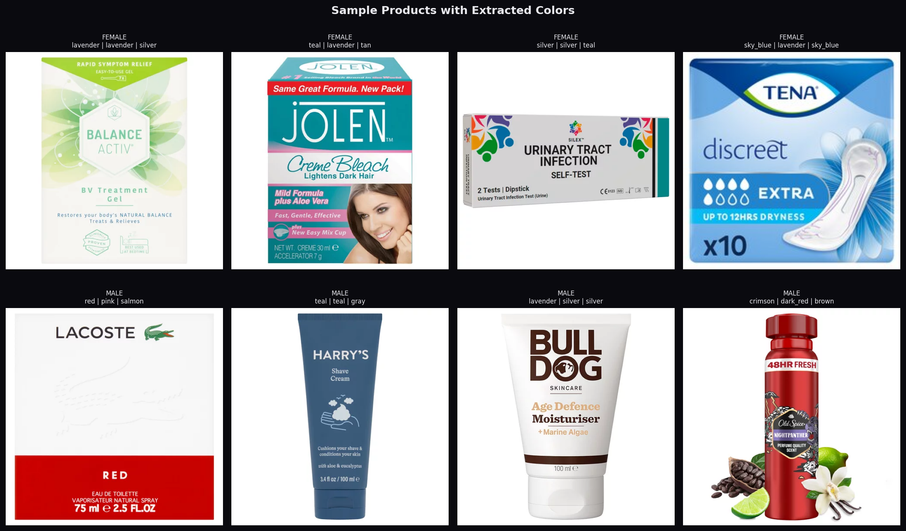
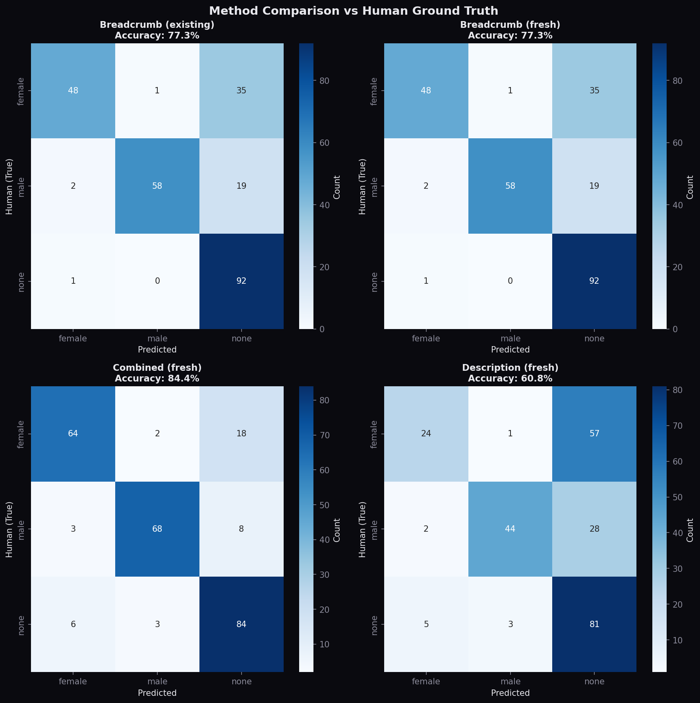

Products marketed to women are widely claimed to cost more than comparable products for men. This project tests that claim across 12,832 personal-care and hygiene products from Tesco, Morrisons, and ASDA, first building a machine learning classifier (histogram gradient boosting, F1 = 0.79 against human labels) that identifies the target gender of a product from text and colour features, then running OLS, quantile, and bootstrap regressions that progressively control for category, store, and within-product characteristics. The raw price gap mostly reflects composition: women's and men's product baskets contain different items, not the same items at different prices.
The "pink tax" refers to the observation that consumer products marketed toward women are priced higher than comparable products aimed at men. The term is widely used in media and policy debates, but the empirical evidence is mixed. Some studies find price premiums on specific items (deodorants, lotions), while others conclude that apparent gaps largely reflect differences in product composition rather than discriminatory pricing. Gonzalez Guittar et al. (2022) studied over 3,000 products and found selective premiums, though men paid more for shaving products. Moshary et al. (2023), using Nielsen scanner data with product ingredient controls, concluded that price gaps reflect product differentiation rather than a systematic "tax."
Gender classification is the first challenge. Many products signal gender through color choices, language, and brand names rather than stating it explicitly. With roughly 21,000 products in this dataset, manual labeling is impractical. This project automates the task using a supervised classifier trained on products with explicit gender terms (e.g. "for women", "men's"), then applies it to label the remaining products.
TF-IDF (term frequency-inverse document frequency) converts product text into numerical vectors by measuring how distinctive each word is within the dataset. Words that appear frequently in one product but rarely across all products receive higher weights. This allows the classifier to learn which terms are associated with gendered products. K-means clustering, used here for color extraction, groups pixel RGB values from product images into clusters to identify the most prevalent colors in each image.
Do products marketed to women cost more than comparable products for men in UK supermarkets? And if so, does the gap persist after controlling for product category?
The central finding is that apparent price differences between gendered products are driven by category composition, not within-category discrimination. Female products are concentrated in lower-priced categories (personal care, period products), while male products span a wider range including premium grooming items. Once product category is accounted for, the price gap becomes statistically insignificant.
The analysis proceeds in two stages. First, supervised classification labels products by target gender using text features (TF-IDF vectors from product descriptions and category breadcrumbs), color features (dominant colors extracted from product images via K-means), and metadata (store, price). Five classifiers are compared, from logistic regression to histogram gradient boosting. Second, OLS and quantile regressions with progressively added controls (store fixed effects, category fixed effects, description TF-IDF) estimate the price differential between female and male products. The key test is whether the female coefficient remains significant after controlling for product category.
The dataset contains 21,436 products scraped from Tesco, Morrisons, and ASDA. Categories unlikely to be gendered (food, electronics, pet supplies, cleaning products) were excluded, leaving 12,832 products in categories such as personal care, cosmetics, and toiletries.
Two sources: (1) explicit gender terms extracted via regex from product text ("for women", "men's", etc.), yielding 1,075 female and 844 male products; (2) 259 products with independent human-coded labels from a separate validation exercise. The training set was balanced to 844 samples per class (female, male, neutral), producing 2,532 training observations split 75/25 into training (1,905) and test (639) sets.
329 features total. Text: TF-IDF vectors from product descriptions (150 features) and category breadcrumbs (80 features). Color: dominant colors extracted from product images using K-means, mapped to 31 named colors, producing 93 binary features (3 color slots × 31 colors). Metadata: store ID, price, and unit price (6 features).
For products with accessible image URLs, the three most dominant colors were extracted using K-means clustering on pixel RGB values, then matched to the nearest named color from a 31-color palette. Color data was successfully extracted for 5,619 products, all from Morrisons. Tesco and ASDA image URLs had expired at the time of extraction, yielding a 0% success rate across those domains. This coverage limitation means color-based findings should be interpreted with caution.

Sample products with extracted dominant colors. Some extractions are noisy: the Lacoste cologne is labeled male but extracted colors include pink/salmon from the background.
The classification task assigns each product to one of three classes: female, male, or neutral. Five classifiers were tested on a 75/25 train-test split. Performance is measured on the held-out test set (639 samples). The models range from simple linear classifiers (logistic regression with L1 or L2 regularization) to ensemble methods (gradient boosting, random forest) that combine many decision trees to capture nonlinear relationships and handle sparse or missing features.
| Model | Accuracy | F1 (Weighted) |
|---|---|---|
| Histogram Gradient Boosting | 79.3% | 0.793 |
| SVM (RBF kernel) | 73.1% | 0.729 |
| Logistic Regression (L2) | 72.9% | 0.730 |
| Random Forest | 72.3% | 0.722 |
| Logistic Regression (L1) | 64.9% | 0.646 |
Histogram gradient boosting performed best, likely because it handles sparse features and missing values (many products lack color data) natively, without requiring imputation. Per-class precision and recall range from 77% to 82% across all three classes, with the neutral class achieving the highest recall at 86%. The model is conservative: it tends to classify uncertain products as neutral, leading to under-classification of gendered products rather than false positives.
The test set above uses labels derived from explicit text patterns, which may not reflect how humans would categorize products. A stricter validation uses 200 products with independent human labels. On this set, the best model achieves 70% accuracy. The drop from 79% to 70% is expected: human coders pick up on subtler gendered marketing cues (brand positioning, imagery, packaging design) that text and color features miss.

Agreement with human coders across different feature sets. The model under-classifies gendered products rather than over-classifying neutral ones.
Feature importance values from the histogram gradient boosting model indicate how strongly each feature pushes the prediction toward a particular gender class. Features are prefixed by source: "bc_" for category breadcrumb terms, "desc_" for product description terms, and "feat_color1_" for the dominant extracted color.
bc_removal: +1.05
bc_period: +0.94
bc_intimate: +0.88
desc_protection: +0.70
bc_products: +0.67
feat_color1_lavender: +0.33
bc_toiletries: +1.86
desc_lynx: +1.04
bc_gel: +0.87
bc_razors: +0.82
bc_blades: +0.67
feat_color1_black: +0.56
bc_accessories: +0.78
bc_conditioner: +0.66
bc_marketplace: +0.65
bc_toothpaste: +0.60
bc_care: +0.52
bc_baby: +0.48
The charts below show color distributions in explicitly gendered products alongside LASSO coefficients indicating which colors predict each gender class. LASSO (L1-regularized logistic regression) shrinks irrelevant feature weights to zero, isolating the colors that carry the strongest classification signal.
Color frequency in products with explicit gender labels. Sample sizes are small (n=32 each).
LASSO coefficients from a binary female/male classifier. Positive values predict female; negative values predict male.
The patterns match expectations: pinks, purples, and lavender are associated with female products; black, brown, and navy with male products. Some results are less intuitive: tan has a strong female coefficient, likely driven by foundation and cosmetics packaging. These associations reflect marketing conventions rather than any inherent property of the colors.
To isolate the contribution of color features, the same L1 logistic regression was trained with and without the 93 color-based features. The comparison measures the marginal gain from adding color information on top of text and metadata inputs.
| Configuration | Accuracy | F1 |
|---|---|---|
| With colors | 64.9% | 0.646 |
| Without colors | 62.8% | 0.622 |
| Difference | +2.2pp | +0.024 |
The improvement is modest at the aggregate level. Color features are most useful when text signals are weak or absent, such as for products with minimal descriptions. Since color data is available only for Morrisons (5,619 of 12,832 products), the contribution is likely underestimated in the full-sample evaluation.
Applying the best classifier to all 12,832 filtered products produces the following distribution. Beyond the explicitly labeled products, the model identifies 533 implicitly female and 278 implicitly male products at above 50% confidence: items that lack explicit gender terms but whose text and color patterns suggest gendered marketing.
| Predicted Class | Count | Percentage |
|---|---|---|
| Neutral | 9,185 | 71.6% |
| Female | 2,255 | 17.6% |
| Male | 1,392 | 10.8% |
The high neutral proportion reflects both the genuine prevalence of ungendered products in the dataset and the model's conservative classification tendency. Some products labeled neutral likely carry subtle gendered marketing that the text-and-color feature set cannot detect.
With gender labels assigned, the second stage estimates the price differential between female- and male-targeted products. All regressions use log-transformed prices as the dependent variable, so coefficients approximate percentage differences (a coefficient of -0.10 corresponds to roughly a 10% price gap). Standard errors are heteroskedasticity-robust (HC1), which accounts for unequal variance across observations and guards against misleading confidence intervals.
The analytical strategy is to add controls progressively. If the female coefficient becomes insignificant after controlling for product category, the implication is that the raw price gap reflects composition effects (women's and men's products fall into different product types with different baseline prices) rather than within-category pricing discrimination.
Among the 1,919 explicitly gendered products (1,075 female, 844 male), female products have a lower mean price (£7.03 vs. £8.15) and lower median (£4.00 vs. £4.50). This is the opposite of what a simple "pink tax" narrative would predict.
Price distributions for female and male products. Log prices (top right) show overlapping distributions with female products shifted slightly left.
The table below shows how the female price coefficient changes as controls are added. Each row introduces a layer of controls to isolate the effect of gender on price. "Fixed effects" (FE) are dummy variables for each store or category, allowing the model to compare products within the same store or product type rather than across them.
| Specification | Controls | % Gap | 95% CI | p-value | R² |
|---|---|---|---|---|---|
| (1) Raw gap | None | −9.3% | [−16.3, −1.7] | 0.018** | 0.003 |
| (2) + Store FE | Store | −9.8% | [−16.8, −2.3] | 0.012** | 0.006 |
| (3) + Category FE | Store + Category | +8.4% | [−8.3, +28.0] | 0.345 | 0.672 |
| (4) + Description | Store + Cat + TF-IDF | +3.7% | [−9.1, +18.4] | 0.587 | 0.738 |
| (5) Unit price | Store + Category | +0.7% | [−11.8, +15.0] | 0.922 | 0.854 |
** p < 0.05. All specifications use log(price) as the dependent variable with HC1 robust standard errors. N = 1,919 for specs (1)-(2); 1,374 for specs (3)-(4); 743 for spec (5). Spec (5) uses log(unit price) as the dependent variable.
Female price coefficient with 95% confidence intervals. The gap is significantly negative without controls, then shifts to a small positive but insignificant estimate with category controls.
Variance explained by each specification. Category controls account for the largest share of price variation.
A three-way comparison using all 12,832 products (with ungendered products as the reference group) shows that both gendered categories are cheaper than ungendered products, with female products especially so. Female products are 16.4% cheaper than ungendered ones (p < 0.001), while male products are 2.9% cheaper (not significant). This suggests gendered products as a whole occupy lower price tiers than the broader product mix, rather than female-targeted products being marked up.
Price distributions across all three gender groups. Ungendered products span a wider and higher price range.
Only 11 product categories contain at least 3 female and 3 male products, limiting the scope of within-category comparisons. For these categories, the median price gap is +7.4% (female more expensive) and the weighted mean is +26.2%, though this average is heavily influenced by outlier categories with very small sample sizes. Most individual gaps are not statistically significant, based on bootstrap confidence intervals (1,000 resamples).
| Category | F | M | Gap | Significant |
|---|---|---|---|---|
| Toiletries > Incontinence | 12 | 3 | +259% | Yes |
| Toiletries > Gifting | 3 | 9 | +30% | No |
| Marketplace > Greeting Cards | 11 | 9 | +25% | Yes |
| Toiletries > Incontinence (sub) | 5 | 3 | +16% | No |
| Greeting Cards > Birthday | 22 | 11 | +10% | No |
| Greeting Cards > Other | 18 | 8 | +2% | No |
| Baby > Nappies | 3 | 3 | 0% | No |
| Health > Medicines | 11 | 4 | −35% | No |
| Health & Beauty > Shower | 3 | 10 | −55% | Yes |
Significance based on 1,000-draw bootstrap 95% confidence intervals.
The +259% outlier in incontinence products is driven by only 3 male comparison products, making it unreliable. The greeting cards category shows a more consistent pattern (+10-25% across sub-categories, one significant), though this likely reflects product differentiation (birthday cards for women may include different materials or designs) rather than identical items at different prices. The shower category shows the reverse: male products are more expensive, driven by premium grooming brands. The direction and magnitude of the gap depends entirely on the product category.
Per-category female price premium with 95% bootstrap CIs. Bold borders indicate statistical significance.
Each point is a product category. Points above the 45-degree line indicate a female premium; below indicates a male premium.
OLS estimates the effect on the conditional mean, producing a single average price gap. Quantile regression instead estimates the gap at different points of the price distribution: the 10th percentile (budget products), the median, the 90th percentile (premium products), and so on. This reveals whether any pricing asymmetry operates differently at the cheap versus expensive ends of the market.
| Quantile | Without Category Controls | With Category Controls |
|---|---|---|
| 10th | −12.1% ** | +43.0% *** |
| 25th | 0.0% | +25.0% *** |
| 50th (median) | −10.0% ** | 0.0% |
| 75th | 0.0% | 0.0% |
| 90th | −20.0% *** | 0.0% |
** p < 0.05, *** p < 0.01. Percentage gaps computed as exp(coef) − 1. N = 1,919 without category controls; 1,374 with category controls. The "with controls" column includes store and category fixed effects (96 categories).
Quantile regression coefficients with 95% CIs. Left: store controls only. Right: store + category controls.
With category controls, the cheapest female products (10th and 25th percentiles) are 25-43% more expensive than the cheapest male equivalents within the same category (p < 0.001), while the gap is zero at the median and above. This could indicate a floor-price effect: budget female products start at a higher baseline, even if mid-range and premium products are priced similarly. However, only 11 of 96 categories contain enough gendered products for within-category comparison, and the number of observations at the tails of these distributions is small, so these estimates should be treated cautiously.
Running the raw-gap regression separately by store reveals substantial heterogeneity. Morrisons shows a large and significant female discount of 18.6% (p < 0.001), while the other two stores show no significant gap. A female × store interaction model confirms this: the Morrisons interaction is significant (p < 0.001) with a total female effect of −50.6%, while the other stores show no significant interaction. This suggests pricing patterns vary by retailer and that aggregating across stores masks meaningful differences.
Left: female price premium by store (thick border = p < 0.05). Right: mean prices by gender and store.
Female products are concentrated in period products, hair removal, and intimate care. Male products cluster in toiletries, deodorants, razors, and skincare. These categories have different baseline price levels, which is the primary driver of the raw price gap. The composition effect explains why the female coefficient flips sign once category fixed effects are introduced.
Top product categories by gender. Female products are concentrated in fewer, lower-priced categories.
The classification and regression results point to four main takeaways about gender-based pricing in UK supermarkets.
Female products are 9-10% cheaper in raw comparisons, and the gap becomes statistically insignificant (reversing sign to +3.7%) after controlling for product category. The unit price regression shows essentially zero difference (+0.7%, p = 0.92). This aligns with Moshary et al.'s conclusion that price differences between gendered products are explained by product differentiation, not discriminatory pricing.
The R² jump from 0.006 to 0.672 when adding category fixed effects is the critical result. Female products are concentrated in lower-priced categories (period products, hair removal, intimate care) while male products span a wider price range. The raw gap reflects where gendered products sit in the category hierarchy, not pricing discrimination within categories.
Only 11 categories had enough gendered products for comparison. Greeting cards show a small female premium; shower products show a male premium; most categories lack sufficient sample sizes for meaningful inference. The quantile regression suggests a possible floor-price effect for the cheapest products, but the evidence is limited.
The classifier identifies widespread gendered marketing: 28% of filtered products are labeled female or male. The more substantive observation is the extent to which retailers segment products by gender through branding, shelf placement, and product descriptions, regardless of whether this segmentation translates into price differences.
Products are classified using explicit keyword matching and a trained classifier. Both approaches miss implicitly gendered products: items marketed through color, imagery, or brand positioning without explicit terms. The human-coded sample (259 products) showed that keyword-based labels miss roughly 23% of gendered products.
Only 11 product categories had sufficient products of both genders for within-category comparison. Finer-grained categories would improve comparability but reduce sample sizes further.
The regression controls for category and description text, but does not account for product quality, ingredients, or size beyond what unit price captures. A "women's razor" and a "men's razor" in the same breadcrumb category may differ in blade count, handle design, or packaging.
Color features are available only for Morrisons (5,619 of 12,832). The data covers three UK grocery retailers; results may not generalise to other product categories (clothing, electronics) or other markets.
21,436 raw products from Tesco, Morrisons, ASDA. Filtered to 12,832 in gendered-relevant categories. Gender labels via regex extraction (1,919 explicit) and human coding (259). Training balanced to 844 per class (2,532 total), split 75/25. Color extraction via K-means on pixel RGB values, matched to 31-color palette (5,619 products with color data).
Classification: 5 models (Logistic L1/L2, SVM-RBF, Random Forest, HistGradientBoosting). Best: HistGB, F1 = 0.793, human agreement 70%. Regression: OLS with log(price) DV, HC1 robust SE. 96 category FE. Quantile regression at 5 quantiles. Within-category significance via 1,000-draw bootstrap 95% CIs. Features: 329 (150 desc TF-IDF + 80 breadcrumb TF-IDF + 93 color + 6 metadata).